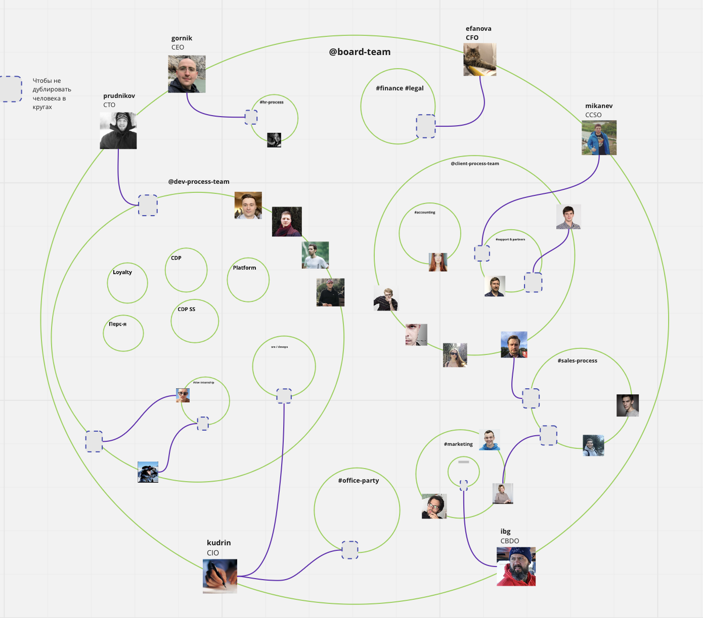

Как устроен бирюзовый бизнес
Меня зовут Александр Горник, я совладелец и генеральный директор компании Mindbox. Мы автоматизируем маркетинг для крупных и средних компаний в России и СНГ. В компании мы развиваем то, что называется бирюзовой культурой. Расскажу, как мы к этому пришли, что мы делаем и какие результаты получаем.
Бирюзовые организации – это компании с плоской оргструктурой, где нет иерархии или она минимальна. Такие компании сравнивают с живым организмом, где все системы исправно работают сами по себе, то есть самоуправляемы.
Преимущество бирюзовых организаций в том, что они поощряют активность сотрудников и вовлекают их в принятие решений. В результате люди чувствуют свою причастность к общему делу, а потому работают лучше.
Вовлеченность сотрудников обеспечивает и хороший финансовый результат: мы растем на 30–50 процентов в год шесть лет подряд. Например, в 2016 году выручка на одного человека составляла 2,5 млн руб. в год, а в 2021 году мы уже получаем показатели 5,5 млн руб. на одного человека. Кроме того, мы существенно экономим на зарплатах менеджеров, потому что у нас их практически нет.
Конкретно для нас бирюзовость заключается в соблюдении трех основных принципов: пользы, самоуправления и эволюции.
1. Принцип пользы означает, что мы не просто зарабатываем деньги, а делаем что-то полезное. Например, у нас есть миссия: сделать каждое маркетинговое сообщение полезным, создавая продукты, помогающие принимать рациональные решения. Сотрудники разделяют эту миссию: они участвовали в ее формулировке.
2. Принцип самоуправления говорит о том, что сотрудники сами принимают решения. К тому же люди могут накладывать вето на решения, которые касаются их самих. Например, сотрудники, которые отвечают за поддержку продукта, могут наложить вето на изменение стандартов, по которым мы эту поддержку оказываем.
3. Принцип эволюции означает, что все решения вызревают эволюционно. Коллектив делает так, а не иначе, потому что это объективно обусловлено предшествующими событиями и объективными данными, а не потому, что так решил руководитель.
Как мы пришли к бирюзовости
В нашей компании не было момента, когда мы раз – и решили стать бирюзовыми. Уже с основания в 2007 году мы придерживались принципов agile, которые перекликаются с принципами бирюзовых организаций. А в 2016 году наш клиент, издательство «Манн, Иванов и Фербер», подарил нам книгу «Открывая организации будущего» Фредерика Лалу. Книга посвящена бирюзовым компаниям, и, когда я ее прочитал, то увидел много общего с нами. Тогда я сказал сотрудникам: «Ребята, оказывается, то, что мы делаем, называется “бирюза”».
В тот момент мы декларировали два правила. Первое – что любой из 60 сотрудников может принять любое решение или наложить вето на решение коллег. Второе – что у нас не будет руководителей. Подробнее об этих правилах я расскажу чуть дальше в этом уроке.
Фактически у нас в работе ничего не изменилось: я просто узнал, как называется стиль, в котором мы работаем. Люди же восприняли это название как очередную идею, которая временно захватила умы руководства. Окончательный поворот к бирюзовости случился в 2017 году, когда мы открыли зарплаты. Из-за разрыва между доходами и расходами надо было уволить несколько человек, и, чтобы решение было прозрачным, мы раскрыли цифры.
Думаю, лишь когда мы раскрыли зарплаты, люди по-настоящему осознали, что бирюзовость – это всерьез и надолго. Этого правила мы придерживаемся до сих пор: каждый может узнать зарплаты коллег в финансовом отчете, доступном в Google Docs.
Как работает правило «любой сотрудник может принять любое решение или наложить вето на решение коллег»
Первое, что нам пришлось сделать при переходе к бирюзовости, – научить сотрудников принимать решения. Для этого мы записывали людей на курсы, в том числе по фасилитации и социократии, рекомендовали книги по теме. Например, книгу про фасилитации Сэма Кейнера «Руководство фасилитатора». Кроме того, мы организовывали дебаты и проводили встречи, на которых учились принимать коллективные решения.
Учились сотрудники и накладывать вето на решения коллег. Скажу сразу: возможность вето не приводит к тому, что люди блокируют любое решение и все бесконечно обсуждают. Наоборот, они начинают серьезно относиться к возражениям и советоваться, потому что каждый голос имеет значение. Если проигнорировать чье-то мнение, этот человек наложит вето и придется начинать все сначала. Поэтому под «учились накладывать вето» я имел в виду, что люди учились договариваться.
Если двое сотрудников не могут договориться, они ищут кого-то третьего и проводят фасилитацию. Обычно фасилитатор – это авторитетный в коллективе человек, который не вовлечен в вопрос напрямую. Например, программист считает, что архитектура сайта должна быть такой, а технический директор не согласен. Тогда они могут позвать IT-директора, который поможет принять решение или примет его сам, если эти двое ему доверяют.
Если же фасилитатор не может помочь, спор сотрудников поднимается на уровень выше. Иерархия эскалации выглядит так:
- фасилитатор – любой сотрудник, не вовлеченный в вопрос;
- фасилитатор – конкретный человек: младший партнер либо сотрудник с более чем десятилетним стажем;
- фасилитатор – генеральный директор;
- фасилитаторы – члены внутреннего совета директоров.
Если договориться не удается, решение так или иначе примет генеральный директор либо совет директоров. Однако весь процесс проходит публично и каждый может высказаться. Мы не делаем что-то лишь потому, что так сказал гендир. И такой подход работает: не было ни одного случая, когда проблему бы не удалось решить в процессе обсуждения. Поэтому главное тут – учиться слышать друг друга.
Пример
У менеджеров по продукту первого уровня есть обязанность раз в два месяца дежурить в службе поддержки. Дежурить менеджеры не любят, а критерии, по которым они понимают, что уже могут перестать, размыты.
На днях молодая сотрудница написала в чат, что перестает дежурить: она посчитала, что уже перешла на следующий уровень. Ее поступок вызвал бурное обсуждение: другая молодая сотрудница сказала, что это несправедливо по отношению к другим, и наложила вето.
Спор сотрудниц привел к тому, что в ближайшее время мы соберемся и будем вырабатывать более четкие критерии дежурств. Таким образом, этот рабочий конфликт, причем совершенно правильный, может привести к глобальным изменениям, которые пойдут на пользу компании. И изменение это возникло снизу, мне как гендиру не пришлось участвовать. Максимум, что от меня может понадобиться, – помочь выработать компромиссное решение.
Как работает правило «нет руководителей»
Мы отказались от руководителей в привычном смысле – как от людей, которые якобы лучше знают, что нужно бизнесу, и принимают решение за других. Фактически же у нас сохранились те, кто отвечает за крупные подразделения и синхронизирует работу команды с глобальными целями компании.
В 2020 году, когда компания разрослась до 120 сотрудников, мы поняли, что в нашей структуре все же не хватает иерархии. Дело в том, что компания производит единый продукт, а значит, у нее есть единые глобальные цели. Эти цели нужно как-то декомпозировать, разделять на цели каждой автономной команды или продукта. Мы видели, что без людей, которые отвечают за это, команды бегут несинхронно, как лебедь, рак и щука.
Таким образом, для нас иерархия – это прежде всего иерархия целей. По сути, в этом ключе роль руководителя ближе к роли эйчара или коуча. Задача руководителя – «поженить», синхронизировать цели высокого уровня с индивидуальными целями сотрудника. А дальше – помочь сотруднику двигаться в этом направлении.
Пример
Компания запускает новое направление – это цель высокого уровня. Направлению нужна команда, которую надо сформировать из действующих сотрудников. Однако сотрудники уже работают в других командах и могут не понимать, зачем им все бросать и переходить в новую. Конечно, можно просто ставить людей перед фактом: «С завтрашнего дня ты работаешь там, а не тут». Но это не наш подход.
Роль руководителя здесь будет заключаться в том, чтобы вместе с сотрудником понять, как переход поможет достичь его индивидуальных целей. Например, если цель сотрудника – до конца года получить повышение, руководитель показывает, как переход поможет к этой цели приблизиться.
Иерархию руководителей, которые доносят до сотрудников цели высокого уровня, мы выстроили в виде кругов. Руководителями в каждом круге стали те, кто уже по факту занимался там вопросами управления. Чем меньше круг, тем более локальные у людей в этом круге цели – и наоборот. Задача руководителей внутренних кругов – синхронизировать цели компании сверху-вниз и снизу-вверх. То есть эти люди до внешних кругов доносят изменения и результаты, а до внутренних – глобальные цели компании.

Подводные камни бирюзовости
Как и у любой системы управления, у бирюзовой структуры есть подводные камни. Основных я бы отметил четыре: собрал их на слайдах, которые вы видите ниже.

Закрепите тему про оргструктуру, ответив на вопрос лектора курса Никиты Алексеева.